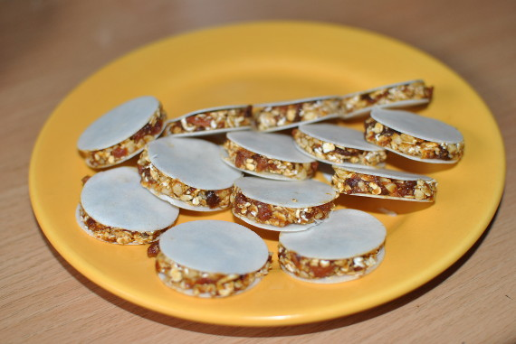

Aprikosen-Ufos

- Zubereitung: ca. 20 Minuten
- Für 20 Stück
Zutaten
- 250 g getrocknete Aprikosen (Soft-Aprikosen)
- 75 g Cashewkerne
- 75 g feine Haferflocken
- 6 EL Orangensaft
- 40 Backoblaten (4 cm Durchmesser)
Zubereitung
- Aprikosen und Cashewkerne mit einem großen Messer sehr fein hacken oder im Blitzhacker zerkleinern. Haferflocken und Orangensaft unterkneten, eventuell etwas mehr Saft zugeben, falls die Masse zu fest ist.
- Mit den Händen walnussgroße Kugeln formen und zwischen je zwei Backoblaten etwas flachdrücken. In gut schließenden Dosen lassen sich die Ufos etwa 3 bis 4 Tage kühl lagern.